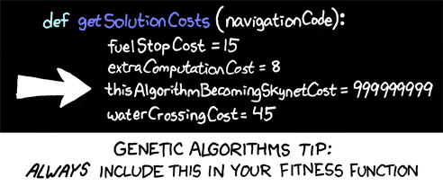
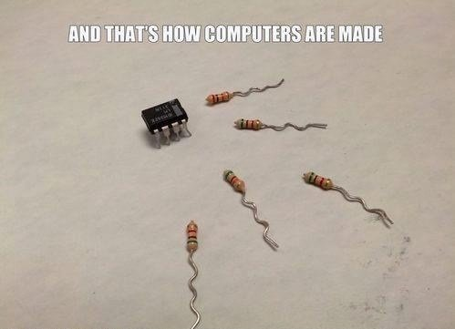
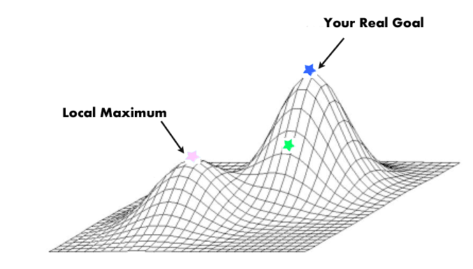
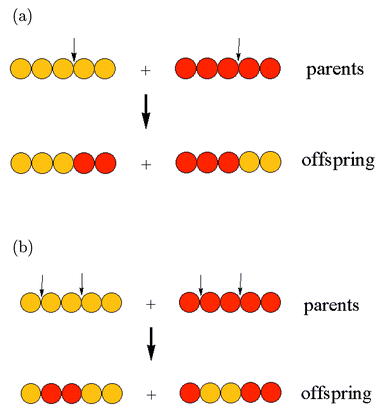
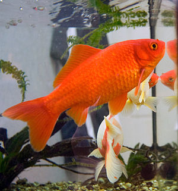
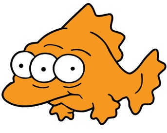
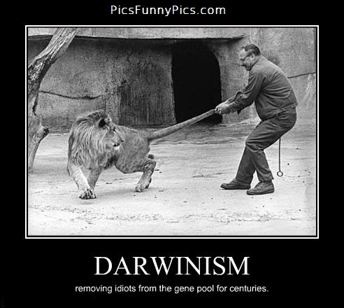

Algoritmos Genéticos
a.k.a. Jugar a ser Dios
Ángel Terrones
¿Qué es AG?
Técnica de Inteligencia Artificial que funciona/trabaja al igual que el proceso de evolución natural.
Términos usados:
- Población.
- Individuo.
- Cruce.
- Selección.
- Genoma.
- Sobrevivencia del más apto.
¿Complicado?
Nope. Es sencillo de usar e implementar.
Problema típico: Agente viajero
El agente viajero debe encontrar el camino más corto que conecte a una serie de ciudades. Solo se le permite visitar cada ciudad una sola vez. No importa dónde empiece. Al final, el agente viajero debe volver a la ciudad inicial.
Es decir...

Esqueleto del algoritmo
- Generar una población aleatoria de individuos.
- Evaluar a cada individuo según su desempeño (fitness).
- Aplicar selección/Cruce/Mutación sobre la población.
- Repetir (2) hasta que la solución sea buena (wat?)
Evaluación de los individuos
¿Cómo saber que individuo es mejor que otro?
- Medir el desempeño del individuo.
- Crear una función que tome la información "genética" del individuo y genere un valor.
- Depende del tipo de proble a resolver.
- ¿Minimización? ¿Maximización?
Función de costo/evaluación

¿Cómo generar nuevos individuos?

Próxima generación
- Matar un cierto número de individuos (ups).
- Seleccionar dos individuos.
- Crear dos nuevos individuos mediante cruce.
- Mutar los dos nuevos individuos
- Añadir los dos nuevos individuos a la nueva generación.
- Repetir hasta completar nueva generación.
Selección
El método de selección depende del problema.
- Selección simple.
- Torneo.
- Ruleta.
¿Por qué no agarrar a los mejores?
Necesitamos mantener variedad
Cruce
Mutación
Mantener variabilidad

Mutation
Elitismo
El mejor individuo pasa a la siguiente generación
Condición de parada.
Depende del tipo de problema (._.)
- Después de un máximo número de generaciones.
- Se alcanzó un cierto objetivo.
- Estancamiento de la solución.
Demo!! :D
Dibujar a la Mona Lisa
Gracias!
¿Preguntas?